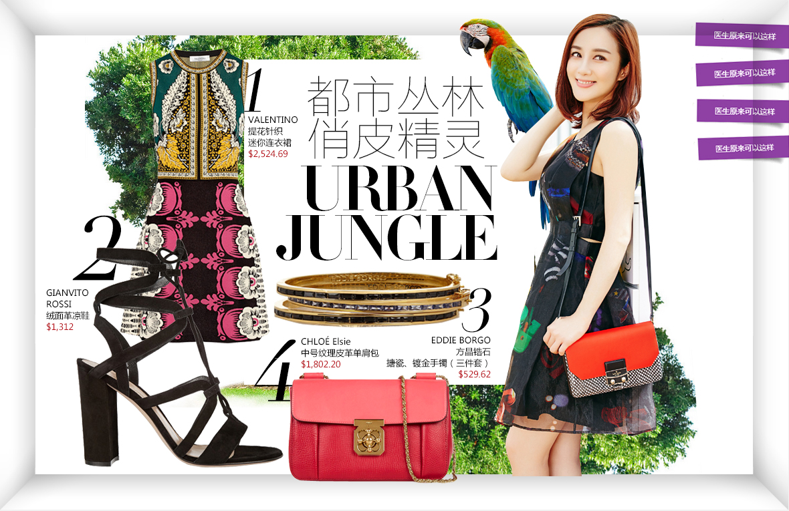

四大国际时装周的热情刚稍稍减退，中国时装周轰轰烈烈的在北京开始了。 摩拳擦掌期待已久的潮人们可算是等到了自己的主场，纷纷发出大招， 不过有些着实有些用力过猛。

搭配看似毫无关联的印花，剪裁以及色彩。而当这些元素相互碰撞时，展现的却是从容而优雅的法式时髦。从剪裁精准的套装到优雅精致的荷叶裙摆，轻薄多层的针织或蕾丝上装，以大胆的印花和绝妙的装饰玩味与透明于不透明间。同时也加入了皮革材质的应用，从光亮的鳄鱼皮外套到炫彩的不规则剪裁机车外套延续了路易威登标志性的传统与工艺。
出品人 Ethan Law 监制 邓立、蔡璐策划 /统筹 李惠 编辑 沈亚萍、李艾、李安杨 视觉 YJ 页面制作 马帅视频 翟英华